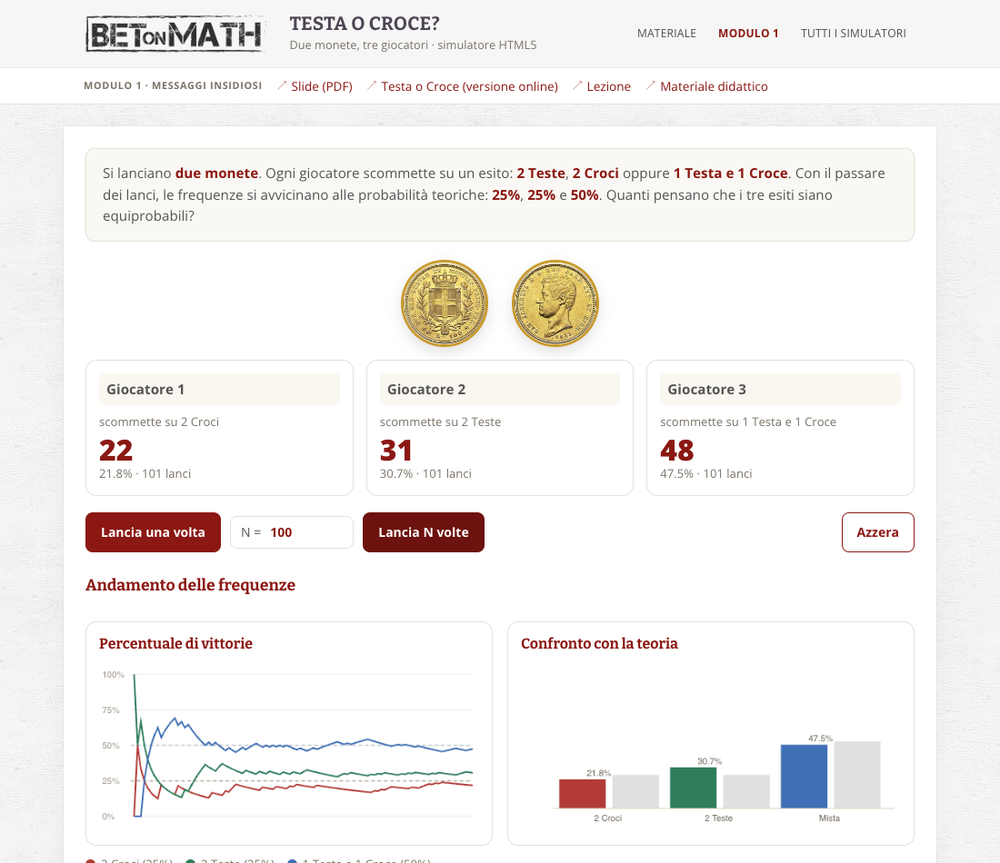
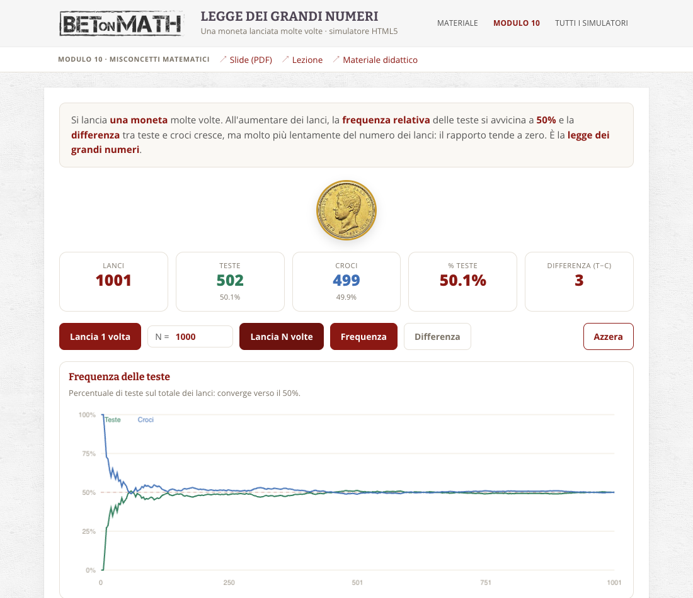
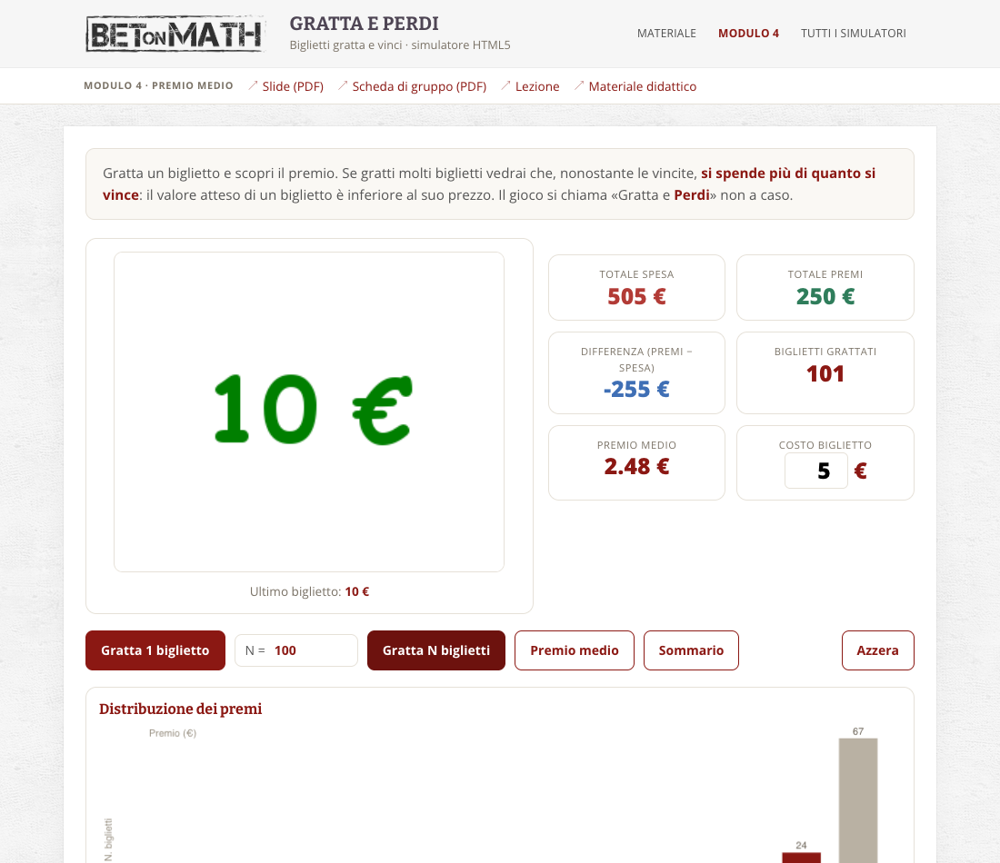
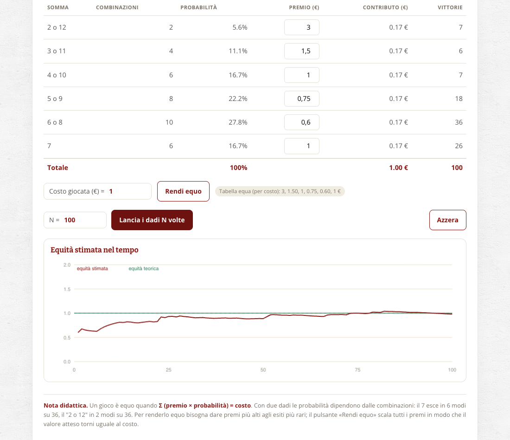
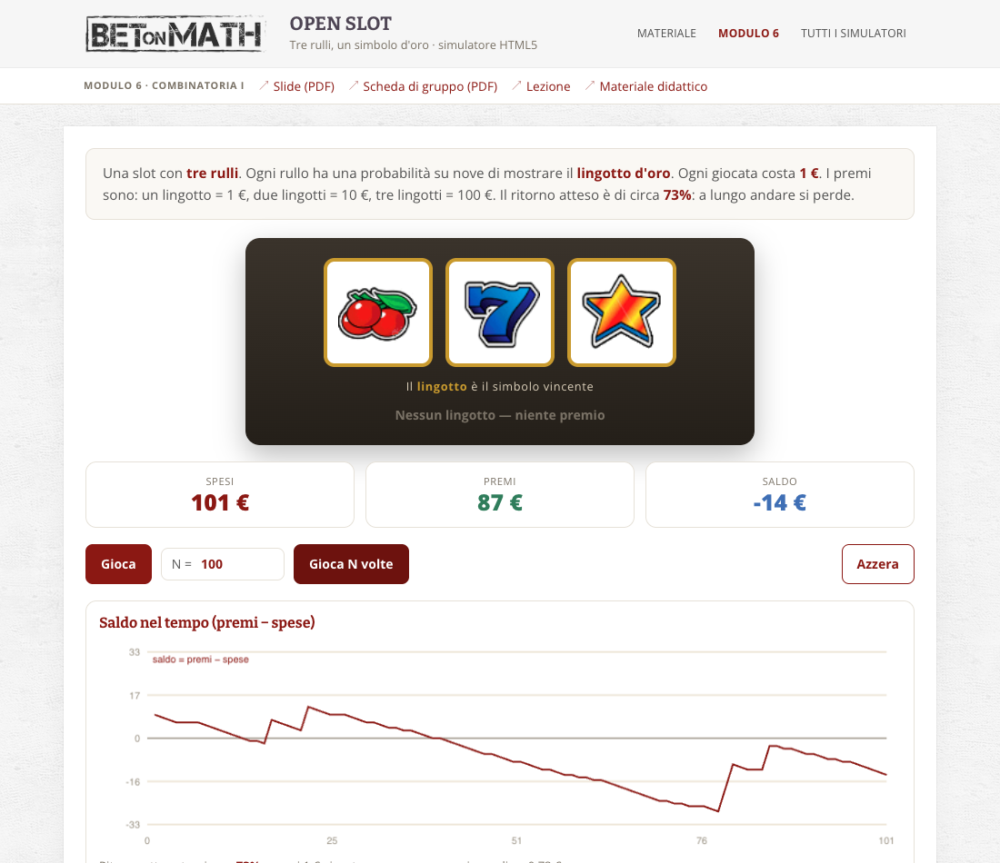

Queste sono le versioni HTML5 dei cinque simulatori didattici di BetOnMath.
Funzionano in qualsiasi browser moderno, su computer e smartphone, senza installazione.
Ogni app riproduce la logica e i materiali (immagini, testi) delle APK Android originali,
ormai non più compatibili con le versioni recenti di Android.

Modulo 1 · Messaggi insidiosi
Testa o Croce?
Due monete e tre giocatori. Le frequenze convergono a 25% / 25% / 50%: i tre esiti non sono equiprobabili.

Modulo 10 · Misconcetti matematici
Legge dei Grandi Numeri
Una moneta lanciata molte volte: la frequenza tende al 50%, mentre la differenza teste−croci cresce come √N.

Modulo 4 · Premio medio
Gratta e Perdi
Biglietti gratta e vinci con la distribuzione reale dei premi: si spende più di quanto si vince. Include il Sommario.

Modulo 5 · Gioco equo
Gioco Equo
Due dadi e una tabella di premi modificabile: scopri quando il valore atteso eguaglia il costo della giocata.

Modulo 6 · Combinatoria I
Open Slot
Slot machine a tre rulli: il ritorno atteso è circa il 73%, quindi a lungo andare si perde sempre.
Moduli del percorso e schede di gruppo
Collegamenti alle slide di ciascun modulo e alle schede per le attività di gruppo, come nella pagina «Materiale didattico».
| Modulo | Titolo | Slide | Scheda di gruppo | Simulatore |
|---|---|---|---|---|
| 1 | Messaggi insidiosi | Modulo 1 | — | Testa o Croce |
| 2 | Alla scoperta degli assiomi | Modulo 2 | Scheda 1 | — |
| 3 | Eventi rari | Modulo 3 | — | — |
| 4 | Premio medio | Modulo 4 | Scheda 2 | Gratta e Perdi |
| 5 | Gioco equo | Modulo 5 | Scheda 3 | Gioco Equo |
| 6 | Combinatoria I | Modulo 6 | Scheda 4 | Open Slot |
| 7 | Meccanismi psicologici | Modulo 7 | — | — |
| 8 | Combinatoria II | Modulo 8 | Scheda 5 | — |
| 9 | Combinatoria III | Modulo 9 | Scheda 6 | — |
| 10 | Misconcetti matematici | Modulo 10 | — | Legge dei Grandi Numeri |